Introduction
In this part, the goal is to separate two entangled lines of handwritten text. This task is more challenging than printed text, with much more variety between different writings, and variation between two characters even with the same writer. However we use the exact same GAN architecture to separate the lines. However, in addition to the U-Net architecture, we test a FPN based generator. It is lighter and seems to achieve better results.
Dataset
Finding a vast lines segmentation dataset was surprisingly difficult. On the advice of my supervisors I attempted to use the ICDAR 2013 lines segmentation challenge dataset, However the training set only contains 200 images, with many in greek and arabic which are outside this project's ambitions. And among those 200 images there are actually very few entangled lines. Furthermore, the annotation is surprisingly hard to use.
Therefore I decided to use the ICDAR dataset as a test dataset only. The training and validation sets are created using the IAM database, which contains more than a hundred thousand images of handwritten text. I made a python script that uses OpenCV to combine images from the IAM handwritten words dataset into two lines, either very close to each other or with intersections between the lines. The images are 512x256. The script also outputs the ground truth for each image.
The final dataset is as follows: 8990 images for the training set, 995 images for the validation set and 10 images for the test set.
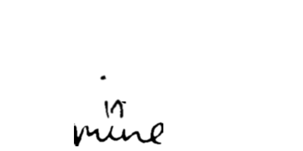
Training
First the mean pixel values and the standard deviation of each channel are computed for the training set and the ground truts. These values are used during the training to normalize the input values for the generator and the discriminator. The network is then trained on the training set for 35 epochs. During the training, affine transforms are used on the input and target images of the training set. As the FPN generator is lighter, it can be trained faster and follows 100 epochs of training.
Results on the validation set
In general, the generator makes some mistakes but it is very good at finding the general shape of the letters and at distinguishing the top line from the bottom line.
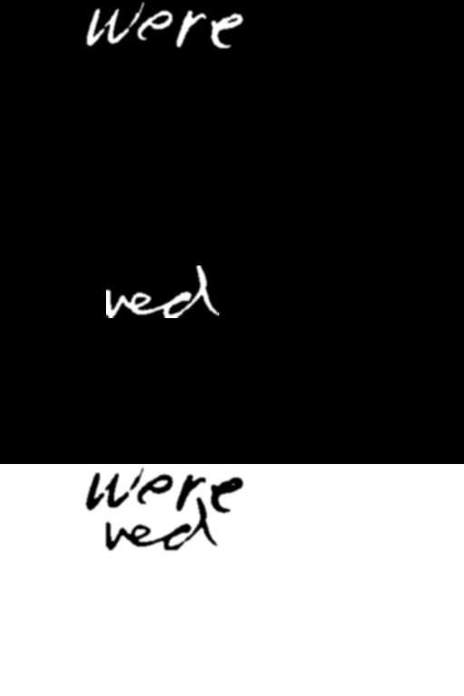 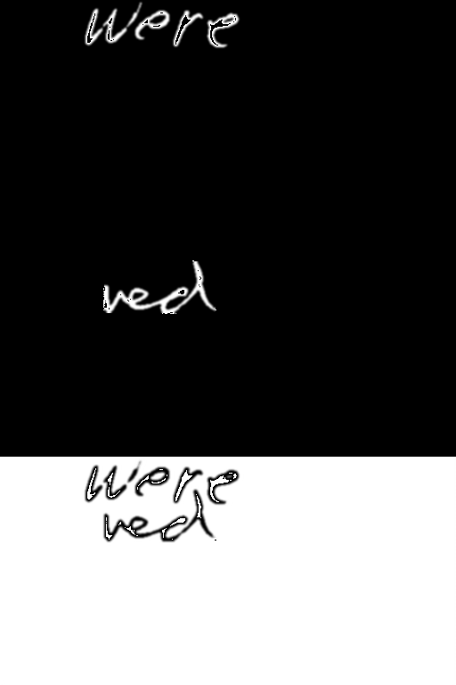

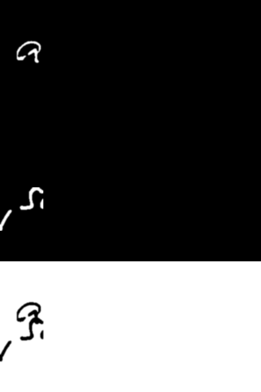 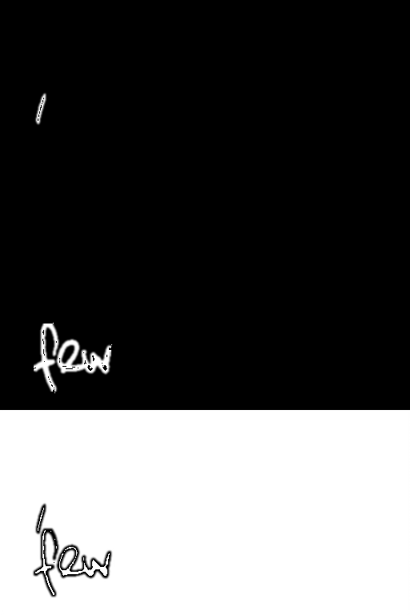
Results on the ICDAR dataset
From left to right: original image, U-Net output, FPN output. In general, the results on the test set is good. Despite a few mistakes and artefacts the networks generalize quite well, with a few glitches for U-Net. One weird detail is that the networks seem to prefer slightly blurry letters, otherwise only the border is segmented. To compensate for this a light gaussian blur is added to the test script.
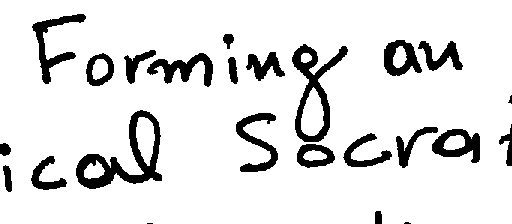 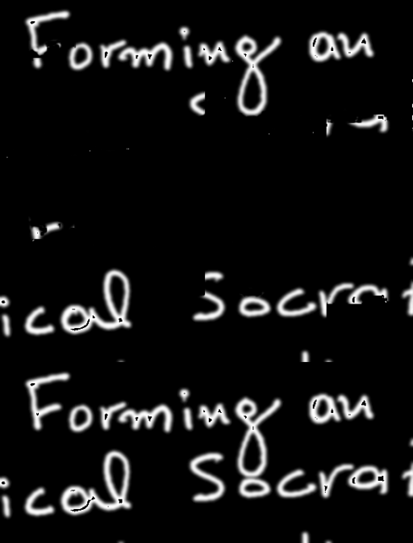 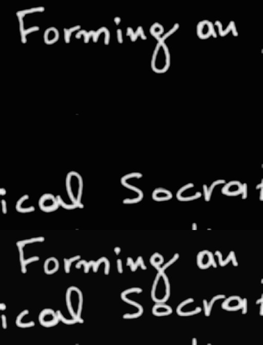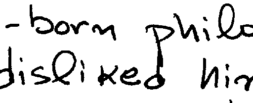 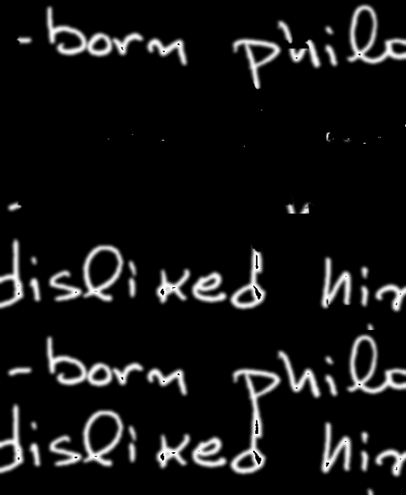 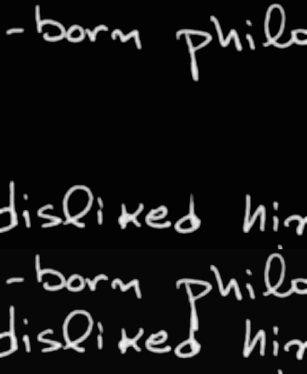